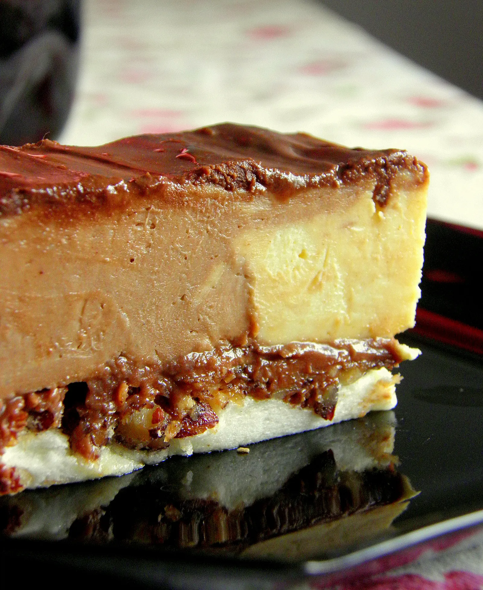

Kinder Bueno torta
Sastojci
Biskvit
- 20 dkg sjeckanih lješnjaka
- 10 bjeljanjaka
- 15 žlica šećera
- 1 žlica jabučnog octa
- 10 dkg nutelle ili nekog drugog čoko namaza
Fil
- 1,5 l mlijeka
- 10 žlica brašna
- 10 žumanjaka
- 10 žlica šećera
- 1 vrećica pudinga od vanilije
- 25 dkg maslaca
- 3 vrećice vanilin šećera
- 10 dkg čokolade za kuhanje
Još je potrebno
- 10 dkg čokolade za kuhanje
- 5 dkg margarina
- 5-6 žlica mlijeka
- 3 vrećice šlag pjene
- malo mljevenih lješnjaka

Priprema
- Na lim (moj je bio 28x34 cm) staviti masni papir, još ga malo premazati margarinom i po papiru ravnomjerno posuti sjeckane lješnjake. Izraditi bjelanjke i šećer, dodati žlicu jabučnog octa i smjesu pažljivo istresti na lješnjake. Peći u pećnici zagrijanoj na 150 stupnjeva sat vremena. Kada je pečeno izvaditi iz pećnice i staviti na tacnu, okrenuti naopako tako da lješnjaci budu gore. Odmah, onako vruće, premazati nutelom.
- Skuhati fil od mlijeka, šećera, žumanjaka, brašna i pudinga. U hladno dodati izrađeni maslac i vanilin šećer. Podijeliti na dva dijela. Jedan dio ostaje kakav je, a u drugi dodati otopljenu čokoladu.
- Žlicom za sladoled vaditi naizmjenično svijetle i tamne kugle i slagati na koru, kao šahovsku ploču.
- Otopiti čokoladu, margarin i mlijeko i time popuniti “rupe” između kugli od fila. Na to sve staviti 3 vrećice šlag pjene ili slatkog vrhnja. Posuti sjeckanim ili mljevenim lješnjacima.